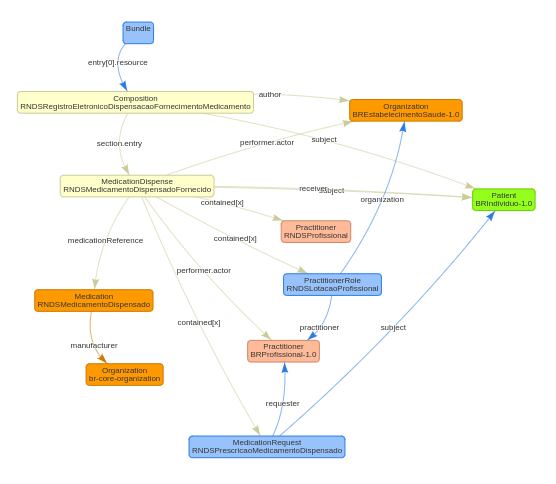

http://loinc.org
http://www.saude.gov.br/fhir/r4/CodeSystem/BRCBO
http://www.saude.gov.br/fhir/r4/CodeSystem/BRCID10
http://www.saude.gov.br/fhir/r4/CodeSystem/BRObmVMP
http://www.saude.gov.br/fhir/r4/CodeSystem/BRTipoDispensacaoRealizada
http://www.saude.gov.br/fhir/r4/CodeSystem/BRTipoDocumento
http://www.saude.gov.br/fhir/r4/CodeSystem/BRUnidadeMedida
http://www.saude.gov.br/fhir/r4/CodeSystem/BRViaAdministracao
urn:iso:std:iso:3166
This fragment is not visible to the reader
Este publication inclui o IP abrangido pelas seguintes declarações.
| Type | Reference | Content | ||||||||||||||||||||||||||||||||||||||||||||||||||||||||||||||||||||||||||||||||||||||
|---|---|---|---|---|---|---|---|---|---|---|---|---|---|---|---|---|---|---|---|---|---|---|---|---|---|---|---|---|---|---|---|---|---|---|---|---|---|---|---|---|---|---|---|---|---|---|---|---|---|---|---|---|---|---|---|---|---|---|---|---|---|---|---|---|---|---|---|---|---|---|---|---|---|---|---|---|---|---|---|---|---|---|---|---|---|---|---|---|
| web | www.saude.gov.br |
IG © 2026+ Ministério da Saúde do Brasil
.
Package br.gov.saude.redfm.fhir#1.0.0-release based on FHIR 4.0.1
.
Generated
2026-06-30
Links: Table of Contents | QA Report |
||||||||||||||||||||||||||||||||||||||||||||||||||||||||||||||||||||||||||||||||||||||
| web | wiki.ihe.net | This is a metadata field from XDS/MHD . | ||||||||||||||||||||||||||||||||||||||||||||||||||||||||||||||||||||||||||||||||||||||
| web | saude.gov.br | O recurso br-core-relatedperson contém as informações sobre uma pessoa envolvida no cuidado de um paciente, mas que não é alvo de cuidados de saúde nem tem responsabilidade formal no processo de cuidado. | ||||||||||||||||||||||||||||||||||||||||||||||||||||||||||||||||||||||||||||||||||||||
| web | saude.gov.br | A pessoa representada pelo recurso br-core-relatedperson normalmente tem um relacionamento profissional pessoal ou não específico de cuidado em saúde com o paciente. O recurso br-core-relatedperson é usado principalmente para atribuição de informações, já que geralmente é uma fonte de informações sobre o paciente. Para manter informações sobre pessoas para fins de contato para um paciente, use um elemento br-core-patien.contact. Alguns indivíduos podem ser representados simultaneamente como um patient.contact e br-core-relatedperson . | ||||||||||||||||||||||||||||||||||||||||||||||||||||||||||||||||||||||||||||||||||||||
| web | saude.gov.br | Exemplos de pessoas que podem ser um br-core-relatedperson : | ||||||||||||||||||||||||||||||||||||||||||||||||||||||||||||||||||||||||||||||||||||||
| web | www.gov.br | The Implementation Guide for the Eletronic Drug Dispensing Record (REDFM) of the National Health Data Network (RNDS) is a comprehensive document designed to guide various health entities, including states, municipalities, the Federal District, health establishments, and private companies, in utilizing the services developed for the RNDS. This guide aims to ensure the seamless integration of local systems with the national network for the submission of Eletronic Drug Dispensing Records (REDFM) following the HL7 FHIR R4 standard . | ||||||||||||||||||||||||||||||||||||||||||||||||||||||||||||||||||||||||||||||||||||||
| web | servicos-datasus.saude.gov.br | The Implementation Guide for the Eletronic Drug Dispensing Record (REDFM) of the National Health Data Network (RNDS) is a comprehensive document designed to guide various health entities, including states, municipalities, the Federal District, health establishments, and private companies, in utilizing the services developed for the RNDS. This guide aims to ensure the seamless integration of local systems with the national network for the submission of Eletronic Drug Dispensing Records (REDFM) following the HL7 FHIR R4 standard . | ||||||||||||||||||||||||||||||||||||||||||||||||||||||||||||||||||||||||||||||||||||||
| web | www.gov.br | The RNDS is a national platform that integrates health data as part of the "Meu SUS Digital" program, which is a federal initiative to materialize Brazil's Digital Health Strategy . By leveraging cloud computing and emerging technologies, the RNDS creates a repository of health documents that stores citizens' health information in an accessible and interoperable manner. This platform not only facilitates healthcare professionals' access to patients' clinical histories, ensuring continuity of care, but also empowers individuals by providing them access to their health data. | ||||||||||||||||||||||||||||||||||||||||||||||||||||||||||||||||||||||||||||||||||||||
| web | www.gov.br | The RNDS is a national platform that integrates health data as part of the "Meu SUS Digital" program, which is a federal initiative to materialize Brazil's Digital Health Strategy . By leveraging cloud computing and emerging technologies, the RNDS creates a repository of health documents that stores citizens' health information in an accessible and interoperable manner. This platform not only facilitates healthcare professionals' access to patients' clinical histories, ensuring continuity of care, but also empowers individuals by providing them access to their health data. | ||||||||||||||||||||||||||||||||||||||||||||||||||||||||||||||||||||||||||||||||||||||
| web | en.wikipedia.org | The guide emphasizes the importance of interoperability, detailing how information exchange between digital health applications, such as electronic health records, portals, and mobile applications, is achieved through RESTful web services developed according to the FHIR R4 standard. It outlines the necessary steps for credentialing, security measures to protect transactions, and the operations required for integration with the RNDS. Additionally, it defines the information and computational models for the REDFM, consolidates FHIR resources for the computational model, and provides example instances and downloadable artifacts for integrators. | ||||||||||||||||||||||||||||||||||||||||||||||||||||||||||||||||||||||||||||||||||||||
| web | servicos-datasus.saude.gov.br | A integração com a RNDS dar-se-á por meio dos serviços ( web services ) mencionados anteriormente. Para que seja possível acessar esses serviços disponibilizados no EHR Services é necessário realizar solicitação de acesso no Portal de Serviços do DATASUS . | ||||||||||||||||||||||||||||||||||||||||||||||||||||||||||||||||||||||||||||||||||||||
| web | webatendimento.saude.gov.br | Vale contextualizar que o parceiro tecnológico pode acionar a equipe técnica do DATASUS por meio do link de suporte se houver dúvidas nos testes ou algum problema no processo de integração. | ||||||||||||||||||||||||||||||||||||||||||||||||||||||||||||||||||||||||||||||||||||||
| web | acesso.gov.br | O acesso aos serviços digitais oferecidos pelo governo deve ser autenticado inicialmente pela plataforma gov.br, a qual exige uma conta que qualquer cidadão pode criar pelo portal https://acesso.gov.br . | ||||||||||||||||||||||||||||||||||||||||||||||||||||||||||||||||||||||||||||||||||||||
| web | www.gov.br | Este Guia de Implementação (IG) tem o objetivo de orientar Estados, Municípios, Distrito Federal, Estabelecimentos de Saúde ou Empresas Privadas que fornecem soluções/software na área de saúde a utilizarem os serviços (web services) que foram desenvolvidos para a Rede Nacional de Dados em Saúde (RNDS) , fornecendo as orientações técnicas necessárias para a integração dos sistemas/soluções locais com a rede, para o envio do Registro Eletrônico de Dispensação ou Fornecimento de Medicamento (REDFM) seguindo as especificações do padrão HL7 FHIR versão R4 . | ||||||||||||||||||||||||||||||||||||||||||||||||||||||||||||||||||||||||||||||||||||||
| web | www.gov.br | A RNDS é uma plataforma nacional de integração de dados em saúde que faz parte do Meu SUS Digital , um programa do Governo Federal que tem como principal missão materializar a Estratégia de Saúde Digital do Brasil . | ||||||||||||||||||||||||||||||||||||||||||||||||||||||||||||||||||||||||||||||||||||||
| web | www.gov.br | A RNDS é uma plataforma nacional de integração de dados em saúde que faz parte do Meu SUS Digital , um programa do Governo Federal que tem como principal missão materializar a Estratégia de Saúde Digital do Brasil . | ||||||||||||||||||||||||||||||||||||||||||||||||||||||||||||||||||||||||||||||||||||||
| web | pt.wikipedia.org | Para garantir a interoperabilidade entre as aplicações de Saúde Digital, em especial Prontuário(s) Eletrônico(s) do Paciente, portais e aplicações ( web e mobile ), a troca de informações ocorre por meio de serviços ( web services ) RESTful , desenvolvidos de acordo com o padrão FHIR R4 . | ||||||||||||||||||||||||||||||||||||||||||||||||||||||||||||||||||||||||||||||||||||||
| web | mobileapps.saude.gov.br | Seu navegador não suporta visualização de PDF. Clique aqui para abrir . | ||||||||||||||||||||||||||||||||||||||||||||||||||||||||||||||||||||||||||||||||||||||
| web | www.gov.br | O SUS Digital Profissional é uma plataforma desenvolvida pelo Ministério da Saúde para materializar a Estratégia de Saúde para o Brasil, e tem como objetivo a troca de informações em saúde entre profissionais de saúde de toda a rede de atenção à saúde. Dessa forma, os profissionais acessam as informações de saúde de um determinado paciente a partir de seu histórico já padronizado, sempre dentro de um contexto de atendimento. O contexto de atendimento indica que o paciente passou por atendimento em um estabelecimento de saúde com um profissional de saúde. | ||||||||||||||||||||||||||||||||||||||||||||||||||||||||||||||||||||||||||||||||||||||
| web | servicos-datasus.saude.gov.br | Com essas evidências, o solicitante pode solicitar acesso ao ambiente de produção no Portal de Serviços . | ||||||||||||||||||||||||||||||||||||||||||||||||||||||||||||||||||||||||||||||||||||||
| web | mobileapps.saude.gov.br |
Contents: Integração com a RNDSPara garantir a interoperabilidade entre as aplicações de Saúde Digital, em especial Prontuário(s) Eletrônico(s) do Paciente (PEP), portais e aplicações ( web e mobile ), a troca de informações ocorre por meio de serviços ( web services ) RESTful, desenvolvidos de acordo com o padrão FHIR R4 . Serviços AuxiliaresA seguir estão listados os serviços que irão auxiliar no envio da informação principal, o REDFM.
Em relação ao serviço Serviços PrincipaisA seguir estão listados os serviços que deverão ser usados para o envio ou consulta da informação principal, o REDFM.
SegurançaSomente com uma solicitação de acesso aprovada será possível realizar o consumo dos serviços ( web services ) do EHR Services .
Após a aprovação, o primeiro passo para realizar o consumo dos serviços é realizar a
autenticação utilizando o serviço
Caso não ocorra nenhum destes problemas, a operação de autenticação será realizada com sucesso
e será retornado um token
(
A autenticação com certificado digital da RNDS utiliza a técnica chamada “ Two-way SSL ”. No “ Two-way SSL ”, além do certificado do servidor, o cliente também deve utilizar um certificado válido e que será conferido. Por outro lado, na autenticação SSL (ou “ One-way SSL ”) somente o certificado digital do servidor deve ser válido e será conferido. Vale ressaltar que o certificado digital deve ser usado somente para realizar a autenticação e obter o token . A partir desse momento, o token é seu " ticket " de passe e todas as chamadas devem ser usadas utilizando somente este, não gerando a degradação de performance relacionada ao uso do certificado digital. Por isso, recomenda-se reutilizar o " ticket " ao máximo durante seu tempo de vida e só então obter um novo token repetindo a operação de autenticação com “ Two-way SSL ”. Exclusão de Registros na RNDS
Recomenda-se que a transação para exclusão de registros (
Como critério de segurança para efetivar a exclusão, será mantida a estrutura atual presente
no FHIR, ou seja, o sistema de autorização irá considerar: UF, CNES, identificador do sistema (
O status do documento excluído será ( Nota : O SUS Digital Profissional é uma plataforma desenvolvida pelo Ministério da Saúde para materializar a Estratégia de Saúde para o Brasil, e tem como objetivo a troca de informações em saúde entre profissionais de saúde de toda a rede de atenção à saúde. Dessa forma, os profissionais acessam as informações de saúde de um determinado paciente a partir de seu histórico já padronizado, sempre dentro de um contexto de atendimento. O contexto de atendimento indica que o paciente passou por atendimento em um estabelecimento de saúde com um profissional de saúde. Identificadores do Registro Enviado a RNDSVale ressaltar que os registros são documentos computacionais, em formato JSON, compostos por perfis ( profiles ) do padrão FHIR R4. Cada registro enviado à RNDS possui dois identificadores:
Ambientes de IntegraçãoSeguindo as boas práticas serão disponibilizados dois ambientes para a integração: homologação e produção. Ambiente de HomologaçãoO ambiente de homologação tem como finalidade validar a integração, seus parâmetros de entradas, saídas e comportamentos negociais, permitindo a realização de testes antes da efetiva comunicação com o ambiente de produção. O ambiente de homologação é único, ou seja, todos os interessados em realizar o consumo dos serviços ( web services ) utilizarão o mesmo ambiente. Porém, mesmo usando o mesmo ambiente, as informações trafegadas (incluídas ou consultadas) estarão restritas aos estabelecimentos de saúde (CNES) elencados na etapa de credenciamento. Os endereços dos componentes de integração, no ambiente de homologação, são:
Evidências da HomologaçãoA partir dos testes realizados e da implementação local, serão aceitas como evidências dos testes em homologação um arquivo com:
Com essas evidências, o solicitante pode solicitar acesso ao ambiente de produção no Portal de Serviços . Ambiente de ProduçãoO ambiente de produção é o ambiente estável e real que provê os serviços ( web services ) a serem consumidos. Para o ambiente produtivo, os integradores deverão acessar os endereços dos seus estados (UF). Durante o credenciamento, a credencial de acesso (Certificado Digital) será associada a um estabelecimento de saúde (CNES) (ou conjunto de estabelecimentos de saúde) no Portal de Serviços do DATASUS. Com isso, a credencial de acesso pertencerá a um estado (UF) específico. Acessos a estados diferentes não são permitidos e serão bloqueados automaticamente pelos serviços ( web services ). Os endereços dos componentes de integração, no ambiente de produção, por estado, são:
Mensagens e Erros da RNDSAo enviar registros para as APIs da RNDS, a plataforma pode retornar diferentes respostas com alguns códigos. O documento abaixo tem como objetivo listar e descrever os erros (ERRXXX) e as mensagens (MSG) da RNDS, ajudando a identificar e corrigir inconsistências. Link para o documento da lista de errosSendo:
|
||||||||||||||||||||||||||||||||||||||||||||||||||||||||||||||||||||||||||||||||||||||
| web | www.youtube.com | Live do REDFM (18/02/2025) | ||||||||||||||||||||||||||||||||||||||||||||||||||||||||||||||||||||||||||||||||||||||
| web | www.youtube.com | Live do REDFM (05/09/2025) | ||||||||||||||||||||||||||||||||||||||||||||||||||||||||||||||||||||||||||||||||||||||
| web | www.gov.br | Perfis dos tipos ValueSet e CodeSystem estão associados a recursos terminológicos. No contexto do REDFM e nos domínios utilizados, foram criados CodeSystems específicos definidos pelo Comitê Gestor de Saúde Digital (CGSD) . | ||||||||||||||||||||||||||||||||||||||||||||||||||||||||||||||||||||||||||||||||||||||
| web | bvsms.saude.gov.br | A Portaria GM/MS Nº 6.100, de 17 de dezembro de 2024 , institui os modelos de informação de Registro Eletrônico da Prescrição de Medicamentos (REPM) e de Registro Eletrônico de Dispensação ou Fornecimento de Medicamentos (REDFM) no âmbito da Rede Nacional de Dados em Saúde (RNDS). | ||||||||||||||||||||||||||||||||||||||||||||||||||||||||||||||||||||||||||||||||||||||
| web | webatendimento.saude.gov.br | Os chamados de suporte relacionados a RNDS deverão ser abertos no link: https://webatendimento.saude.gov.br/faq/rnds |
|
../assets/images/bra.svg
|
|
acessoGov.png
|
|
estabelecimentosFilhos.png
|
|
gerenciadorCredenciais.png
|
|
portalServicos.png
|
|
redfmMC.png  |
|
tree-filter.png
|